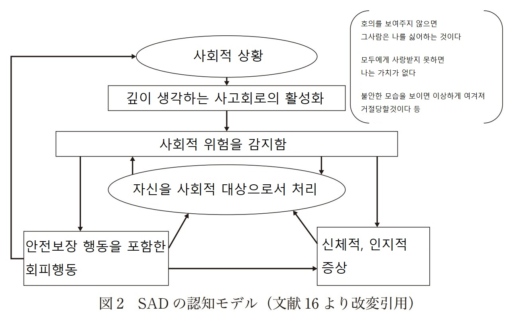

불안장애의 원인에 대해서는 이렇다 할 명확한 원인이 규명되어 있지 않습니다.
불안장애는 유전적 요인도 아니고, 유년기때부터 바로 알아챌 수 있는 질병도 아닙니다.
불안장애에는 각기 다른 성격의 여러 정신질환 (공황 장애, 강박 장애, 외상 후 스트레스 장애,
특정 공포증 등)이 속해 있어, 한마디로 규정을 지을수 없으나,
계속 쌓아왔던 불안과 공포가 특정 계기로 인해 기폭제가 되어 어느 순간 눈에 띄게 드러난다는 것입니다.
그러므로 자주 불안을 느끼거나 일상생활에 장애가 생길정도로 문제가 생긴다면
조기에 발견하고 조치를 취하는 것이 중요합니다.
보통 초기 청소년기 장애로 시작되지만 합병증으로서 우울증과 관련이 깊기 때문에 초기에 예방이 필요합니다.
특히 나이를 들수록 우울증이 심화될 우려가 있습니다.
불안장애의 원인이 다양하기 때문에 대부분 예방이 어렵지만
휴식, 취미활동 등 심리적 이완을 통해 스트레스를 항상 조절하고 관리하는것이 중요합니다.
직장생활이나 학업에 지장이 생기고 정신적 고통과 신체적 증상이 장기화 될 때 쯤이면
수많은 정신적 합병증이 발병한 뒤일 가능성이 높고, 이 때는 불안장애의 수준은 난치병이 되어
완치하기가 어려운 질병이 되어 있을 것입니다.
암을 가만히 내버려두면 여러곳으로 전이되는것과 마찬가지로,
정신적 스트레스로 인한 신체증상을 과소평가하고 버티다가
결국 신체에 문제가 생기기 시작했을때는 이미 상황이 심각하게 악화되어 있기 마련입니다.
불안장애가 가져오는 증상으로서는 수면장애, 변비, 소화기관질환, 두통등의 신체증상을 포함하고
얼굴이 빨개지거나, 떨림증상, 두근거림, 집중력 저하, 아무것도 생각하거나 느낄수 없게되는 증상,
이런것들이 각각 한층더 원인으로 작용해 불안을 유지시키는 악순환이 형성됩니다.
또한 대다수 불안장애를 가지고 있는 사람들은 우울증도 기본으로 함께 가지고 있습니다.
불안장애-우울증은 이하와 같은 공통된 증세를 보입니다.
불안장애를 가진 사람에게 인생이란 고통 그 자체와 같습니다.
가만히 있어도 방전되는 고장난 배터리처럼, 그들은 항상 과열되어있고
숨쉬는것 만으로도 체력을 소모하고 있습니다. 그러므로 이들에게 사회적 활동이란
정신적 소모와 위험부담이 큰 리스크를 동반한 목숨을 건 사투와 가깝습니다.

불안장애 환자는 평소 사교적상황과 대인관계를 부정적으로 해석하여 위험의 사인으로 받아들여,
위의 그림과 같이 불안의 프로그램을 활성화 시킵니다.
이런 사고방식은 사회를 위협과 위험 그 자체로 받아들이며,
이런 위험에 대한 위기관리 능력이 부족한 불안장애 환자들은 보통 안전확보를 위한 회피행동을 보이게 됩니다.
한층 더 나아가, 엎친데 덮친격으로 신체적 증상인 얼굴이 빨개지거나 떨림증상 등등이
불안을 더 가속화시키고 유지시키는 악순환이 형성됩니다.
악순환을 가장 가중시키는 요소로서는, 자신을 사회적 시선으로 바라보는 과정에 있습니다.
자신을 3인칭 시점으로 바라보아, 불안할때 생기는 자신의 감각을 그대로 이용하여
남이 바라보는 자신의 인상을 만들어버립니다.
그러므로 자신이 타인에게 부적절한 평가를 받고 있다는 위험이 있다고 그대로 믿기 때문에
이런 신념이 강화되어 실제 사회적 상황에서 생기는 일들을 회피하거나
제대로 바라보지 못하는 일이 많아집니다.
특히 불안장애 환자는 얼굴 표정에 대한 높은 감수성을 가지고 있기 때문에
상대방의 부정적인 얼굴표정에 대한 뇌 영역의 과도한 활성화가 보고되고 있습니다.
거부를 두려워하고 부정적인 평가를 두려워하는 기질 때문에 면접이나 시험과 같은 평가에 대한 이슈조차도
두려워하고 피하려 하는 경향이 있습니다.
주변 사람들이 불안해하는 환자를 이해해주고 지지해주거나
환자에 대한 인상이 나쁘지 않다는 것을 설명해주지 않는한
이러한 내부 프로그램은 가속되어 블랙홀처럼 더 빠져나올 수 없는 사고회로가 완성됩니다.
불안장애 환자는 주위로부터 [넌 너무 신경을 많이 쓴다, 마음 단단히 먹어라] 등의 말을 들을뿐,
그 병증이 이해받지 못한다는 느낌을 많이 받습니다
이는 더욱 환자의 입을 틀어막고 내면으로 빠지게 하는 주된 원인이 됩니다
그러므로 심리상담치료의 경우에는 먼저 환자의 마음을 이해해주고 충분히 이야기를 들어 준 뒤
환자 생각의 오류를 교정하고 행동을 조절하는 방법등의
개선방안을 제안하는식의 심리교육적 치료를 진행합니다.
모든 정신과적 치료에서 가장 선행이 되는 약물치료에 대해서
대다수의 기성세대들은 부정적으로 보기 때문에
정신과를 찿아가 약물을 처방받을때 쯤이면 이미 증세는 악화되고
정신질환의 회복을 위해 복용해야 하는 약의 복용기간은 평생이 되어 있을 가능성이 큽니다.
초기 청소년기때부터 복용했으면 충분히 개선될 수 있었을 병증이
성인기가 되서 뒤늦게 약을 복용하기 시작하여 겨우 현상유지에 머물러 있는 경우가 많습니다.
특히 복용했다 효과가 없어 중단하고 다시 몇년뒤에 정신과를 찿아가는등
치료를 미루고 미루다가 최악의 상황이 찿아왔을때 겨우 약물치료를 시작하는 등의 행동은
암을 초기에 발견해놓고도 자연치유가 될거라 믿고 있다가 온몸에 전이가 되고 나서야
조치를 취하는 것과 같은 어리석은 행동입니다.
정신과에서 처방하는 약에 대한 불신도 이에 한몫 작용합니다.
"약 없이 정신력과 의지로 어떻게든 극복할 수 없냐"고,
정신이 피폐해져서 온 환자에게 정신력 운운하는것은
피를 많이 흘려 약해진 환자에게 더 많은 피를 흘리라고 하는것과 같은 말입니다.
그게 가능하다면 세상의 모든 난치병과 불치병환자들은 이미 정신력으로 다 나았을 것입니다.
이에 저에게 약을 처방해 주던 의사는 이렇게 말했습니다.
[매일 매일 약을 복용하는 것 조차도 지키지 못하는데 무슨 정신력으로 이겨내겠다는 것입니까?]
정신과에서 처방하는 불안장애에 대한 약물로는 대표적으로
벤조디아제핀류와
항우울제인 SSRI종류가 있습니다.
벤조디아제핀이 가장 널리 사용되는 약물군이지만 졸음과 기억력 저하등의 부작용이 심하고
장기간 복용시 금단증상이 심하게 나타납니다.
SSRI는 항우울제이지만 불안장애에도 적용이 되는 약물입니다.
이도 역시 부작용으로 졸음 두통 성기능장애 변비 등이 있을 수 있습니다.
따라서 자신에게 맞는 약물과 용량을 찿기까지는 수많은 부작용을 겪을 수 밖에 없습니다.
많은 부작용들의 경우 원래의 불안장애보다 더 큰 위험에 직면할 가능성도 있습니다.
약으로 인해 뇌수축, 근무력증, 기억상실, 졸음, 시야몽롱, 호흡곤란, 마비, 보행곤란 등의
일시적으로 신체기능을 사용하지 못하게 되는 부작용이 발생하게 된다면
이는 불안장애로 인한 신체증상보다 더 위험한 상황에 처할 수도 있습니다.
병원에서도 이런 모호한 불안장애라는 질병에 대한 정확한 처방을 초기에 발견하기는 어려울 것입니다
그러므로 초기에 약을 찿아 복용하는 기간 동안은
외부 상황에 노출되지 않고 안전하게 자신의 신체증상을 관찰할 수 있는 안전한 환경이 필요합니다.
그러나 자신에게 맞는 약물과 용량을 찿게 된다면
혈압이 높은 사람이 혈압약을 먹으면서 일상생활을 지속하듯이
불안장애라는것을 어느정도 제어 하면서 무리없이 일상생활을 할 수 있습니다.
그러므로 리스크가 있더라도 천천히 무리하지 않고 적절한 시행착오를 통해 약을 찿아야만 합니다.
자신에게 꼭 맞는 약을 찿는다면 불안장애나 우울증으로 인한 신체화 증상정도는
부작용 없이 피부로 느낄 수 있을 정도의 통증 경감 효과를 느낄 수 있습니다.
그러므로 자신에게 맞는 약을 찿기까지의 시간이 얼마나 걸리더라도
맞는 병원과 약을 찿기위한 여정을 계속 해야만 합니다.
그러면서도 한가지 유념해야 할 점은
약을 찿았다 하더라도 불안장애 그 자체가 즉시 호전이 되거나
극적으로 좋아지는 경우는 별로 없다는 것입니다.
약물의 경우 불안장애로 인한 합병증세로 오는 신체적 증상의 경감에는 큰 도움이 되지만
사회적 상황을 한번에 해결하거나 불안을 근본적으로 뿌리뽑는것은 불가능합니다.
결론적으로는 아무리 그래도 약이 없는것보다는 있는것이 백만배 낫다는 점입니다.
불안장애가 장기화가 되어 신체적 증상까지 발현되었을때에는 약물이 필수적이며
약이 없이는 일상생활이 불가능하기 때문입니다.
그리고 약을 꾸준히 복용하여 어느정도 최악의 상황이 지나갔을때
한단계 더 나아가 정신의학적으로는 인지행동치료라는 요법을 시행합니다.
인지행동치료는 불안이 나타나기 쉬운 사회적 상황을 확인하면서
행동을 교정해나가고 생각과 경험을 수정해나가는 치료입니다.
위에서 기술한 불안장애의 사고회로를 가지고 있는 사람은
조금만 불안의 조건이 발동해도 악순환회로가 작동되어,
최악의 상황을 상정하여 생각이 극단으로 치닫는 경우가 있습니다.
그러므로 그 악순환 회로가 돌지않게끔,
그리고 역으로 선순환이 되게끔 치료를 시도하는것이 인지행동치료입니다.
그 일례로 이하와 같은 설명이 있습니다
--------------------
"최악의 상황이 일어날 것 같아 불안할 때 다시 차분히 생각해 보아라.
실제로 결과는 그리 나쁘지 않을 것이다.
예를 들어, 당신의 직업을 잃어 노숙자가 될 지 모른다는 불안감에 휩싸일지라도
사실은 그렇게 빠른 시일 내에 노숙자가 되지 않을 것이다.
당신의 나이가 젊다면 여러 청년 지원 정책들이 있을 것이고
쉽사리 길거리에 나앉게 되지는 않을 것이다.
우리는 선진국에 살고 있으며 손을 뻗으면 도와줄 많은 사람들과 정책과 지원금이 있을 것이다.
이처럼 아주 최악의 상황이 떠올라 우울할 때,
다시 생각해보면 그렇게 최악의 상황은 아닐 수 있다."
--------------------
불안장애를 가진 사람이 항상 최악의 경우를 상정하여 불안에 떠는 이유는
아이러니하게도 그런 최악을 피해서 "죽고싶지 않다"는 두려움 때문입니다.
즉, 불안장애 환자가 "죽고싶다"고 말하는것 조차도
"살려달라,구해달라" 라는 말의 완곡표현이라는 것입니다.
[도망치기 싫은데 도망가고 싶다] 같은 양방의 기분이 있는것도
하고싶지만 불안이나 현실적 제약등의 장애가 있기 때문에 못하는 것 뿐
실제로는 불안장애를 겪는 사람의 내면에는 하고자 하는 것들이 아주 많이 있습니다.
다만 인간관계 속에서 그 기대가 무너져내려 체념이 되어버린 뒤
배려가 없는 잔인한 이 세상에서 무언가를 하는것을 포기해 버렸을 뿐입니다.
그러므로 사고회로의 선순환 회로가 구축될 때 까지는
무리하게 공포에 직면하게 내몰아세우는것보다는,
할수있는 범위 내에서의 환자 본인의 일상생활을 조금씩 개선해 나가는 것이 중요합니다.
가능한 것에 주목하고, 실패하더라도 일희일비하지 않는것이 포인트입니다.